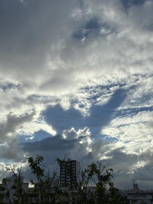
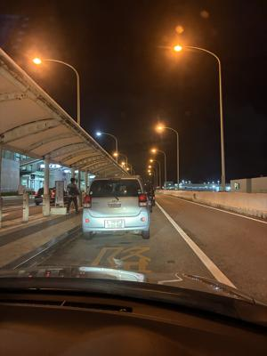

うるがいの話 ある日
最新: 夜の那覇空港【うるがいの話 ある日】とは 一日だけのプログです
『うるがいの話』の最新一日だけのプログで、通信料が少なく経済的だ。カニの画像をクリックすると全ての日付が載る『うるがいの話』サイトを表示します
|
|
【うるがいの話】 うるがい(ｳﾙｶﾞｲ urugai)とは、『もずくがに』の名前でとても大きくなります。 |
|---|---|
|
|
【カミマヤーの話】 猫のことを方言でマヤーといいます。カミマヤー（kamimayaa）とは、神の猫のことです。 |
|
【たながぁの音楽】 たながぁ（ﾀﾅｶﾞｰ tanagaa）とは手長えびのことで、何種類かあり大きいのは車 エビぐらいになります。 |

|
【ぶながぁの話】 ぶながぁ(ﾌﾞﾅｶﾞｰ bunagaa)とは、赤い髪の毛、赤い身体、そして身長は１ｍ２０ｃｍ ぐらい、川の蟹を食べているの目撃された。場所は沖縄県国頭郡大宜味村のと ある村僕の隣近所に住んでいる爺さんから、聞いた話です。 |
|
|
【ギーマの話】 ギーマ(giima)とは、山原の里山に咲くスズランに似た、 花を付けます。実は食べられます、 気が付くと口の周りが紫になっています。 |
2026年09月12日 (土）夜の那覇空港
16:11

飛行機の運航状況見ていたら、２０分遅れるのでアパートに迎え
に行くの２０分ずらすね、とコドモを迎えにいった。遅れるって
メールで来たはずだけどと言うと、『来ないよ、連絡がきて初め
て知ったヨ』と答えた、オオ、さすが格安。結局飛行機はさらに
遅れて３７分遅れになった。金曜日の夜８時前の空港は、混んで
ました、３階は明らかに迎えだろうと思われの車がほどんど移動
せず、たむろしていた。

ヨメのお義母さんの９１歳になる妹の小母さんが、手術後の検査
を終え、那覇市立病院は終了となった。家に送る車の中で、認知
の入った甥（７０から８０か）をから、毎日、電話が来るので困
っているとこと。誰も相手にしてくれないので、酒を飲んだ状態
での電話、『養子に出された、親に見捨てられた』と、フムフム
。そういえば、ヨメの別の従兄も養子だった。ご近所さんも、養
子だと言っていた。たしかにいろいろと、複雑なご様子です。
ナレーターとしても活躍した俳優の森本レオさん（本名・森本治
行＝もりもと・はるゆき）が今月４日に、亡くなっていたことが
分かった。８３歳だった。
昔、プロジェクトの飲み会で、別の会社の男性から私の声がいい
と大勢の前で告白されました。森本レオさんに似ていると言って
いた。なお、ヨメには滑舌が悪いとも言われてます。